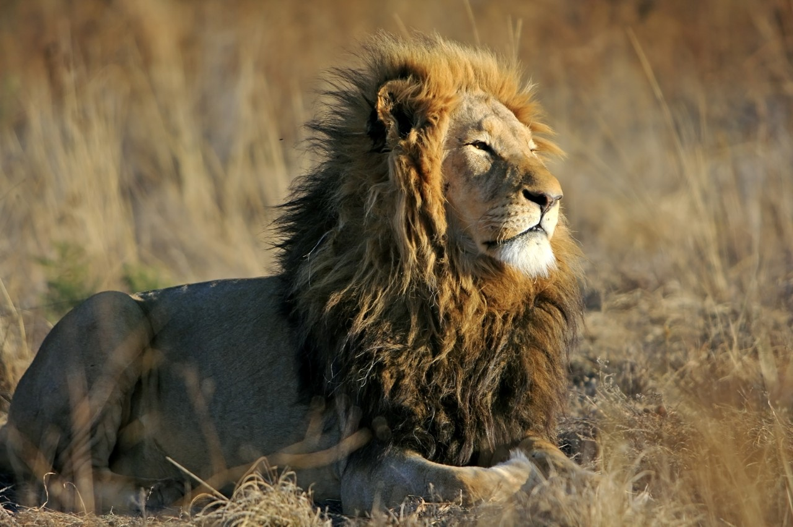
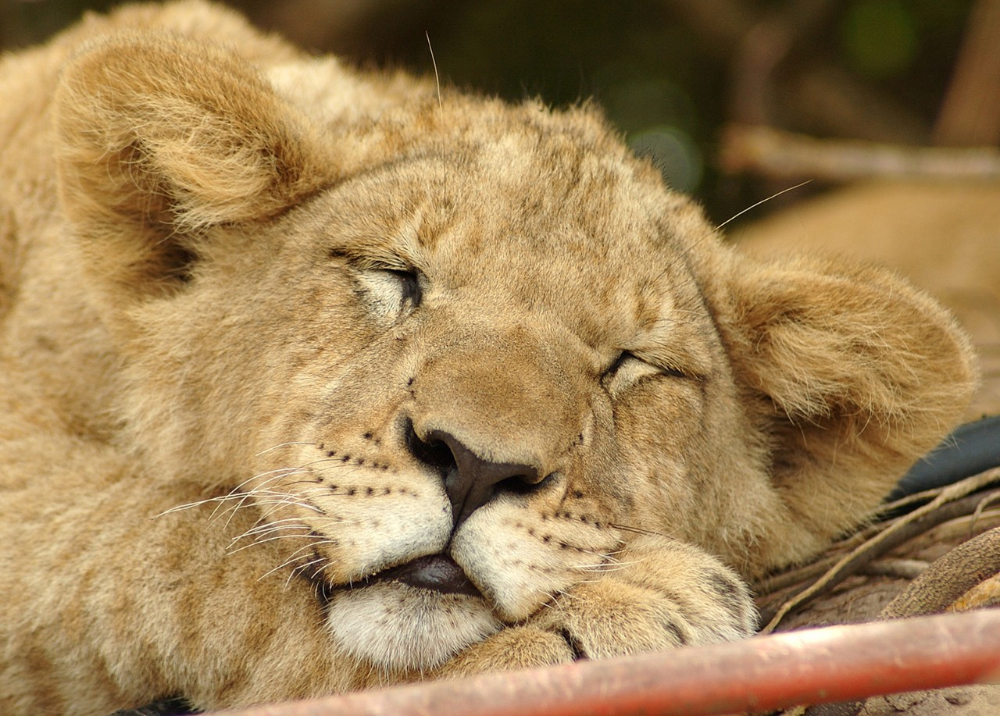
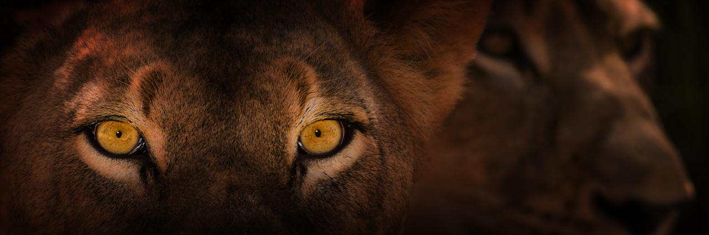
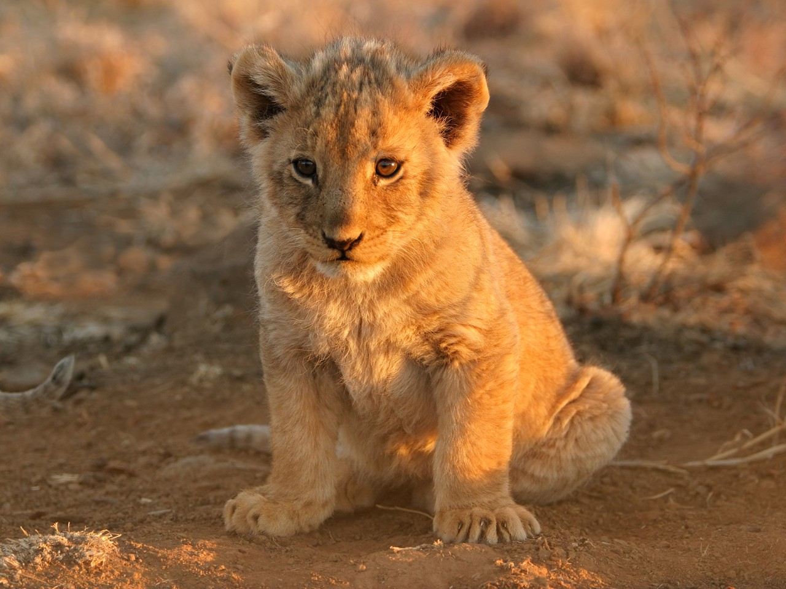

Lions are the only cats that live in groups, which are called prides. Prides are family units that may include up to three males, a dozen or so females, and their young. All of a pride's lionesses are related,and female cubs typically stay with the group as they age. Young males eventually leave and establish their own prides by taking over a group headed by another male.
Lion Prides and Hunting
Only male lions boast manes, the impressive fringe of long hair that encircles their heads. Males defend the pride's territory, which may include some 100 square miles of grasslands, scrub, or open woodlands. These intimidating animals mark the area with urine, roar menacingly to warn intruders, and chase off animals that encroach on their turf.
Female lions are the pride's primary hunters. They often work together to prey upon antelopes, zebras, wildebeest, and other large animals of the open grasslands. Many of these animals are faster than lions, so teamwork pays off.
After the hunt, the group effort often degenerates to squabbling over the sharing of the kill, with cubs at the bottom of the pecking order. Young lions do not help to hunt until they are about a year old. Lions will hunt alone if the opportunity presents itself, and they also steal kills from hyenas or wild dogs.
Conservation
Lions have been celebrated throughout history for their courage and strength. They once roamed most of Africa and parts of Asia and Europe. Today they are found only in parts of sub-Saharan Africa, except for one very small population of Asian lions that survives in India's Gir Forest.
PHOTO




Lions can see six times better in the dark than humans! They have a reflective layer of cells at the back of their eyes. Light from the moon or stars hits the cells and bounces forward, like a car’s headlights. Animals and surroundings appear brighter in the dark.
VIDEO
Lions hunt in groups, improving their chances of success against larger prey. Group hunts are carefully orchestrated events. For example, each lioness takes on a different role. Some lions act as “wings” by fanning out and circling prey on long stalks. The “center” position carefully stays put until the wings drive the prey their way. Then they attack.